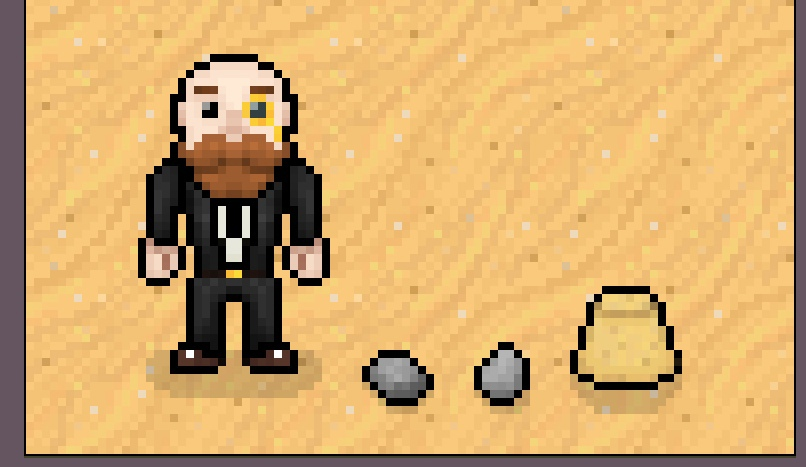

Mist The Game
You have arrived in MistLands — a fantasy world where the seven elements flow and converge. In the distant past, the Archons granted mortals unique elemental abilities. With the help of such powers, people formed a bountiful homeland out of the wilderness. However, 500 years ago, the collapse of an ancient civilization turned the universe upside down... Though the calamity the world suffered has ceased, peace has yet to be restored.
Action starts in Japanese village, located on island. Here you can exchange the money from defeated enemies for new sword, armor and experience scrolls. EXP scroll will provide you a skill point, required to obtain or upgrade skill Around the Mist Village will be a fog, which disappear than you kill all monsters and disactivate special "fog generator". After you destroy all "fog generators" you can come down to caves with labyrinth, puzzles and special bosses. Player can use skills, sword and hands to produce a damage.
Main Menu

Mist Island
The main territory An Isolated Archipelago Far East of MistLands Overcome endless thunderstorms and set foot on the islands of red maple and cherry blossoms. On winding shores and towering cliffs, and in forests and mountains full of secrets, witness the Eternity pursued by Her Excellency, the Almighty Narukami Ogosho.
Main Character
The main character Faruzan An outstanding scientist of the Academy "a century ago" and one of the founders of ancient mechanics as a field of study. Although she hailed from Harawat, she was renowned for her talents in mechanical engineering throughout Sumeru... Although those honors had been forgotten by the river of time, just like herself.
Character Concepts:
